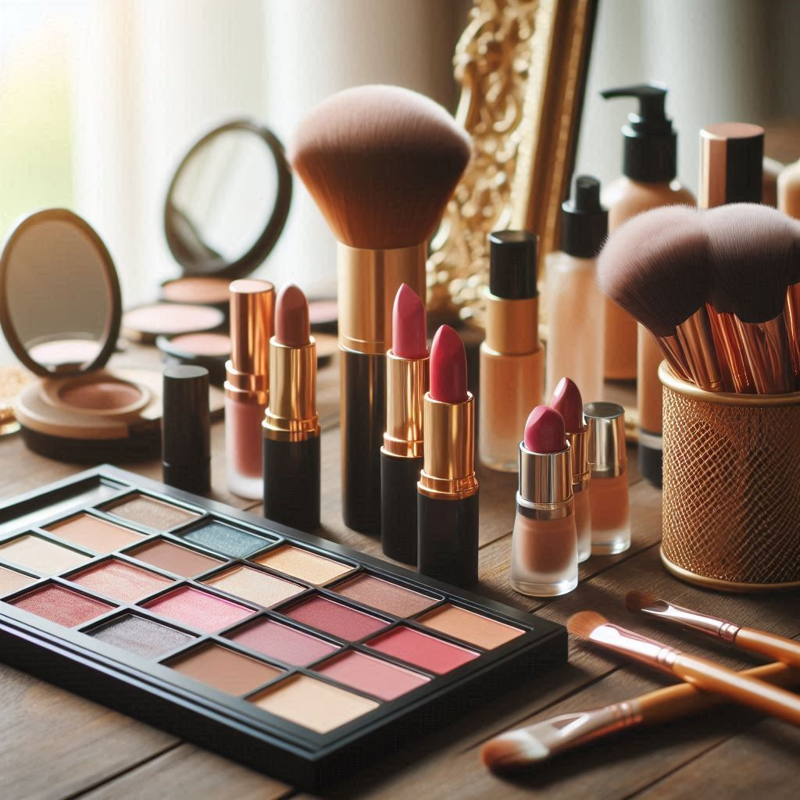

Secret of Beauty
Los secretos de la belleza pueden verse como una celebración de la autenticidad y la individualidad. En lugar de seguir tendencias o estándares impuestos, la verdadera belleza radica en abrazar lo que te hace única. Cada imperfección cuenta una historia y refleja experiencias vividas. La belleza se encuentra en la diversidad de formas, colores y estilos que cada persona aporta al mundo. Además, los secretos de la belleza también incluyen el poder de la creatividad. Experimentar con el maquillaje, la moda o incluso el peinado puede ser una forma divertida de expresarte y mostrar tu personalidad. La belleza no es solo sobre lo que ves en el espejo, sino sobre cómo te sientes al mirarte a ti misma y cómo te expresas a través de tu estilo personal. Por último, mantener una actitud positiva y practicar la gratitud por lo que eres y por tu cuerpo también son claves para irradiar belleza. Cuando te sientes bien contigo misma, eso se refleja en tu presencia y en cómo interactúas con los demás.
